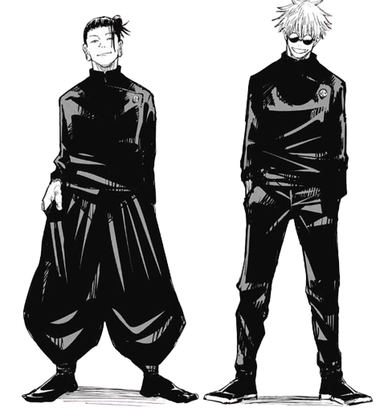
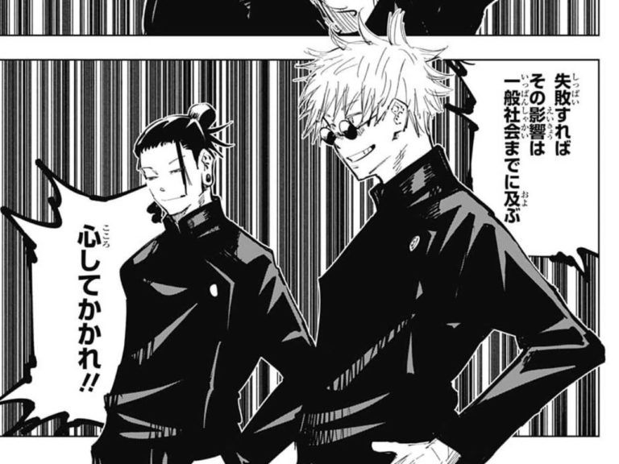
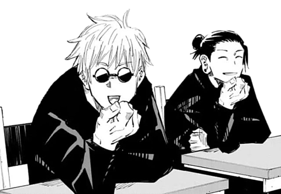

問題児同士。ただし最強。
実力同士、問題児同士、青春をお互いの隣で過ごした五条と夏油。一緒にいればなんだってできる...！「二人で最強の存在だった、高専時代の二人。

肩を並べる親友。
反発しながらも、五条は夏油から善悪を学び人間として成長。夏油も五条にとくことで、己の正義を確かめられたのではないだろうか。

高めあう戦力。
信頼して背中を預け合える実力が、お互いにある。だから本気で戦えるし、多少の無茶だってできるのだ。

戻れない青春。
そんな楽しい日々で二人は絆を深め、「二人で手を組んだ時の無敵さ」を高めているのかもしれない。